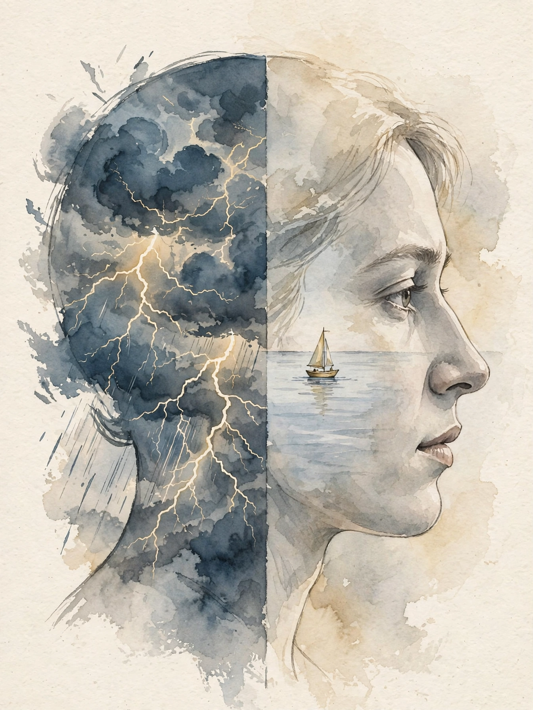
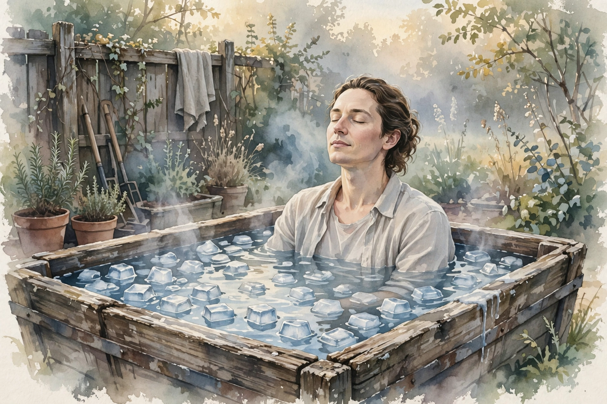

Huberman Lab · Episode Companion
Neuroscience of Emotions
Dr. Ralph Adolphs, Caltech neuroscientist, joins Andrew Huberman to ask what emotions are, where they live in brain and body, and how we regulate them. The episode moves from philosophy to a famous patient with no amygdalae, and lands on practical tools: reappraisal, breathing, and the trainability of control itself.

Illustration. Emotion as interrupt and as weather: the same head holds both. AI-generated watercolor made for this page.
Watch. The official Huberman Lab episode video. Use the chapter menu above to move through this companion as you listen.
The Wisdom Index: every nugget in this companion
~00:01
Intro: Do Emotions Exist?
Huberman opens his conversation with Dr. Ralph Adolphs, a neuroscientist at Caltech who studies emotion, with a provocation. The philosopher Paul Griffith wrote a book arguing that emotions do not really exist. Survey the competing theories, from Joseph LeDoux to Lisa Feldman Barrett to Paul Ekman, and they look so different that even the experts seem unable to agree on what emotions are.
The words we have for emotions predate modern science.
Dr. Ralph Adolphs · Episode ~00:06
Adolphs grants the confusion but rejects the conclusion. Our emotion words are old, and the concept deserves revision, but he argues that everybody kind of knows what emotions are
and that science owes the question a straight answer. His answer: emotions are evolved functional modules, systems built to handle statistically recurring environmental challenges that share a common structure. Fear handles predators. Disgust handles contamination. Each module pairs a detection problem with a response.
Nugget 1 · Definition
Words predate science
What happened. Adolphs admits emotion words are pre-scientific and the theories conflict, then defends emotions as real: evolved functional modules for recurring environmental challenges.
Why it matters. The debate is not about whether you feel things. It is about what kind of thing a feeling is. His answer makes emotions engineerable: modules can be studied, mapped, and retrained.
The principle. When experts disagree on definitions, look for the functional question underneath. What is this system for?
~00:08
Four Features of Emotion
To give the concept edges, Adolphs lists features that emotions share. First is priority: emotions take over behavior the way reflexes do. Put your hand on a hot stove and you withdraw. Meet a bear and you run or curl into a ball. He credits the Nobel laureate Herbert Simon, who noted in the 1950s or 60s that emotions work as interrupt mechanisms. Normal goal-directed behavior needs a monitor for predators, and the interrupt must win or you die.
Second is valence, the good-bad axis psychologists use to organize feelings. Third is scalability: an emotion can run from mild unease to full panic. Fourth is temporal persistence: emotions outlast the trigger, coloring the minutes or hours after.
The four features Adolphs names
Schematic summary of his list. Not measured data.
Source: Huberman Lab, Neuroscience of Emotions, ~00:08. Schematic of the features Adolphs lists.
Nugget 2 · Attention
Priority interrupts
What happened. Emotions share priority with reflexes: they seize control of behavior. Simon framed them as interrupt mechanisms for goal-directed life.
Why it matters. You cannot schedule an emotion away. Any regulation strategy must work with an interrupt, not against a schedule.
The principle. Design your tools for the interrupt moment. Calm planning loses to a hijacked attention every time.
~00:28
Granularity and Reappraisal
Before you can regulate an emotion, you must identify it. Adolphs credits Lisa Feldman Barrett for the main work on emotional granularity: how fine-grained your awareness of your own emotions can be. A tangled knot of confusion and frustration feels overwhelming partly because it has no edges. Naming the strands gives the regulation strategies something to grip.
Language helps, but Adolphs says it is not required. Some people think in words, some in pictures, most in a mixture. The point is discrimination, not vocabulary.
Once identified, the main strategies are cognitive reappraisal: reinterpreting the situation to change the emotion. His warning is precise. Reappraise without overthinking it. Go down the rabbit hole and you feel the emotion more, not less. Good reappraisal is light and fast, a reframe, not a rumination.
Nugget 3 · Regulation
Name it without drowning in it
What happened. Emotional granularity, from Barrett's work, lets you separate a tangled feeling into parts. Cognitive reappraisal then reframes the situation, but only if it stays light.
Why it matters. Granularity without reappraisal is just a finer misery. Reappraisal without granularity has nothing to work on. And heavy analysis becomes the emotion it meant to fix.
The principle. Separate the strands, reframe once, move on. If you are still analyzing, you are no longer regulating.
~00:33
The Ice Bath Experiment

Illustration. Adolphs trains his own autonomic control in a horse trough of ice. AI-generated watercolor made for this page.
Regulation has two trainable parts, Adolphs says. One is the strategy itself. The other is the strength and automaticity of control, the muscle underneath every strategy. To train his, he took up ice baths on a tip from his former colleague Justin Feinstein.
The setup is gloriously unglamorous: a horse watering trough from Amazon, insulated, filled with 40-pound bags of ice every week. The first week was terrible, pure whole-body cold pain. The second week his breathing and heart rate still rose. Then, gradually, with a kind of automaticity, the pattern flipped. Now he steps in and his heart rate drops, his breathing drops, and he relaxes completely.
The training generalized. Trying to park on the street with a driver honking behind him, he felt his stress response stay flat, trained in the trough and transferred to traffic. He is careful about the claim: It's an experiment of one.
He does not present it as a published study. He presents it as direct autonomic training with a sample size of one and a result he can feel.
He also names the strategy that comes before any other: situational avoidance, structuring the environment so you never enter the state you want to avoid. Do not rely on willpower inside the bar. Choose the restaurant without one.
Nugget 4 · Training
Train the controller
What happened. Adolphs trained autonomic control with ice baths until the stress response inverted: heart rate and breathing now drop on entry. The control transferred to unrelated stressors like traffic.
Why it matters. Strategies are software. Control strength is hardware. Most people debug the software while the hardware stays weak.
The principle. Practice voluntary stress in a safe container. The calm you build there follows you out.
~00:45
Patient S.M. and the Amygdala
Adolphs began his career on the amygdala as a postdoc with Antonio Damasio in the early 1990s, studying a famous patient known as S.M. She had selective bilateral amygdala lesions. The first finding: she could not perceive fear in emotional facial expressions.
Years later, with Justin Feinstein as first author, the team tested whether she could feel fear at all. They took her to haunted houses, where she poked the monsters and tried to touch things. They took her to an exotic pet store with snakes and spiders. They showed her horror movies. She showed no conscious experience of fear in any of them. One patient is a big caveat, but the deficit looked specific to fear.
Nugget 5 · Lesion logic
Necessary for some fears, not all
What happened. Patient S.M., with both amygdalae lesioned, lost fear of external threats: faces, haunted houses, snakes, horror films. The deficit was specific, not a general emotional blank.
Why it matters. The amygdala is not the fear center. It is a module for a class of fears, which means other classes run on other hardware.
The principle. When a system breaks selectively, believe the selectivity. It maps the real boundaries.
~00:58
The Carbon-Dioxide Panic
The S.M. story has a twist that redraws the map. Feinstein, with collaborators including Rene Hurleman in Germany, put a mask on S.M. and two or three patients with similar lesions and had them inhale carbon dioxide. CO2 changes blood pH, the brain detects suffocation, and about half the general population gets a panic attack from it. Every amygdala-lesion patient had a full-blown panic attack.
The conclusion is sharp. The amygdala is required for fear of external threats, but interoceptive fear, the alarm from inside the body, runs on different circuitry and survives without it. Two fear systems, two sets of hardware.
Patient S.M.: which fears survive without amygdalae
Direction of effect from the studies described. Hover for detail.
Source: Huberman Lab, Neuroscience of Emotions, ~00:45 to ~00:58. Feinstein et al. studies as described in the episode.
The same section touches how emotions map onto the body. Researchers build bodily maps of emotions, charts of where people feel anger, fear, joy, and sadness in their flesh. The maps are consistent enough to study, which is one more line of evidence that emotions are whole-body events, not brain-only software.
~01:26
The New Science of Regulation
Adolphs traces the field through James Gross, who first organized emotion regulation around basic mechanisms: suppression, reappraisal, acceptance. The field has since moved to two bigger ideas: variability and flexibility. No single skill fits all occasions. The skilled regulator holds many options and switches among them with the context.
The other big shift is interpersonal. Emotion regulation happens between people. You regulate others, you read others, and their states change yours, a bidirectional exchange. A large part of emotional intelligence is an automatic read of that exchange, tuned to context.
Emotion regulation: from three mechanisms to two capacities
Schematic of the field's movement as Adolphs describes it.
Source: Huberman Lab, Neuroscience of Emotions, ~01:26. Gross's mechanisms and the field's move to variability and flexibility, per Adolphs.
Nugget 6 · Social
Regulation is interpersonal
What happened. The modern view adds the social dimension: people regulate each other's emotions in a bidirectional exchange, and reading it automatically is a core emotional skill.
Why it matters. Solo techniques miss half the system. Your calm regulates the room, and the room regulates you.
The principle. Practice regulation with people, not just on yourself. The audience is part of the instrument.
~01:53
Tools: Breath, Meditation, Music
The episode closes its tool section with breathing. A friend asked to do coherence breathing before they sat down: slow inhales and exhales to a tone. Adolphs calls such transition exercises great, and notes they raise heart rate variability. The body is the fastest lever on the emotion because the emotion already lives there.
He adds a caution from the meditation literature. A study of five minutes of meditation per day found that people felt tremendous increases in anxiety during the initial phase, just sitting with their thoughts while everything stirred. The tool works, but the on-ramp is uncomfortable, and beginners should expect it.
Two more set pieces round out the science. Adolphs describes running 100-mile races across 30 hours as a study in sustained emotion management, the mindset work of mile 40, mile 50, mile 60. And he cites one of the earliest emotion studies, Anne Blood and Robert Sattorii in the mid-90s, who used PET, not fMRI, to watch what music does to the brain when a piece sends shivers down the spine.
Nugget 7 · Practice
Start with the breath
What happened. Coherence breathing and transition exercises raise heart rate variability and work fast. Meditation helps too, but five minutes a day first raised anxiety before it lowered it.
Why it matters. The breath is the shortest path to the emotion because the emotion is a body state. Expect the first sessions to feel worse. That is the stir, not the failure.
The principle. When in doubt, breathe first and analyze later. Judge a practice at week four, not day two.
The episode in seven lines
- Emotion words predate science, but emotions are real: evolved modules for recurring challenges.
- Priority, valence, scalability, persistence: the four features that mark an emotion.
- Granularity first, then light reappraisal. Heavy analysis becomes the feeling it meant to fix.
- Train the control muscle with voluntary stress. The calm transfers.
- The amygdala gates external fear. The suffocation alarm lives elsewhere.
- Modern regulation is variability plus flexibility, and it happens between people.
- Breathe first. Expect meditation to stir anxiety before it settles it.
Distilled from Huberman Lab, Neuroscience of Emotions and Tools for Improving Emotion Regulation with Dr. Ralph Adolphs (~2h10m). Full episode: youtube.com/watch?v=P-h5WSQG1Sw. Studies named: Feinstein et al. on patient S.M., the carbon-dioxide panic work with Rene Hurleman, Barrett on emotional granularity, Gross on emotion regulation, Anne Blood and Robert Sattorii's PET music study.